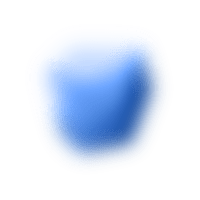

Всегда ли цели терапии СД2 на поверхности?
Цель по HbA1c
Гипогликимия
Осложнения СД
СС риски
Основа терапии -
патогенез СД2

Звенья патогенеза СД2

Смертельный октет

Звенья патогенеза СД2

1988
2009
2016